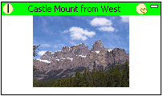
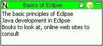
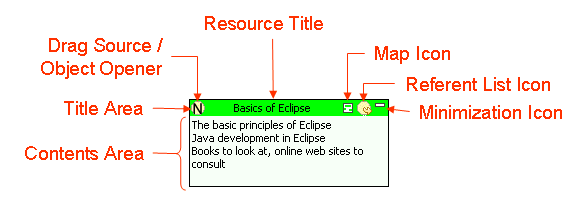
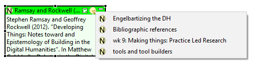
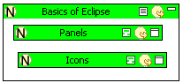

|
|
One can use Pliny's Annotation Area to structure and manage references to notes, images, etc. References to notes appears in the Annotation area as reference objects. In this section we describe how the reference object appears, and describes its parts.
Most of the time you will see reference objects displaying references to notes, but it is also possible to see a reference object to things other than notes. Here are examples of a reference to an image (on the left) and a reference to a note (on the right):
| Image Reference | Note Reference |
|---|---|
|
 |
 |
Note the similarities and differences. The elements of the reference object are described below. However, in both reference objects one can see the title area (shown in both figures in green, but the colour used depends upon the type of the reference), with the title of the referenced resource in the centre. The main area of the reference object shows the "content" of the reference. For notes this is the note's content. For the image, a thumbnail appears. For some reference objects Pliny is unable to show any content. In this case, this area will be empty.
Here are the parts of the Reference Object:


The generated menu contains a list of items (here four notes) that refer to the original note (here "Ramsay and Rockwell ..."). In the example above we can see that this note is referenced by notes called "Engelbartizing the DH", "Bibliographic refernences", etc. You can click on any item in this referent list to open it. Note that the current item (in which the reference object we are now looking at is shown) will not appear in the list even though it too, of course, contains a reference to this particular note.
If the object does not appear in any other reference area, Pliny will report "no items to display."
The map view is a miniature reference area. When a reference is showing the associated reference area it looks like this:

Here the reference object "Basics of Eclipse" shows that this note contains a reference to two other notes "Panels" and "Icons". You can treat this area as any other annotation area -- you can create new notes into the area for example. You can also drag notes from outside it or from other sources into it or drag objects out.
Note that the Map icon has changed to the text contents icon
( ) when the map view is in
operation. Click here to switch back to the text contents view.
) when the map view is in
operation. Click here to switch back to the text contents view.
 |
| Pliny Help Pages by John Bradley are licensed under a Creative Commons Attribution-Noncommercial-Share Alike 2.0 UK: England & Wales License. |